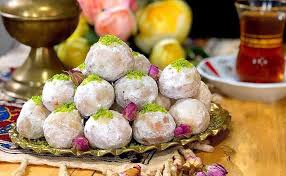

-
Plum Stew(Khoresht alu):a traditional Kerman dish,made with dried plums and pinto beans
-
Kalam Polo:(Shiraz dish)a rice dish with cabbage and meatballs
-
Kolumba & Mahi Bereshte(also known as Kabab Zoghali):(Qeshm dish).Kolumba is a stew-like dish made with boiled wheat, fish, vegetables (like coriander and dill), and local spices. Mahi Bereshteh is roasted fish, often Sangsar (Striped piggy) or Sorkhoo (Blackspot snapper), seasoned with special spices and herbs.
-
Qottab:(Yazd dish)a sweet pastry filled with a mixture of walnuts, cardamom, and powdered sugar.



About me:
I'm Mahya Heydari. As in this project,we talked about cities,I want to just tell my interests about this topic. I like colorful and modern cities,they are crowded,people feel safe and they gather together.There has so many special dish and cuisines you could try. That's it!